以色列跨境空襲
打擊黎巴嫩、敘利亞、伊拉克或葉門目標，衝突有擴大到多國的風險。
報導標題：IDF fighter jets strike villages of Rachit and Hadatha in southern Lebanon 來源 ↗
公開來源整理｜最後更新 2026-11-01 02:45（台北）｜每 3 小時更新，出事時加開
📌 11/1（日）每日摘要｜台海 2 級升溫：台股、台積電或新台幣單日異常下跌｜美伊 1 級｜歐洲北約 2 級升溫：戰機緊急升空、機場關閉或交戰規則變更｜烏俄 1 級：外交關係變化或安理會緊急會議｜朝鮮半島 2 級升溫：北韓彈道飛彈發射｜南海 1 級常態：南部戰區演習或美菲聯合巡航｜以巴紅海 2 級升溫：胡塞攻擊紅海／亞丁灣船隻。降溫訊號：美伊、烏俄。市場無異常波動。
48 小時內曾達較高等級，暫不降級
下一個觀察點：國防部每日通報；10 月 10 日國慶前後共軍是否發布演習或聯合戰備警巡。
目前沒有指標超過門檻
🕊️ 有降溫訊號（見原因與來源）
沒有指標超過門檻
下一個觀察點：美伊透過調停方會談的結果；UKMTO 荷莫茲新通報（已自動抓取）。
1 項主要、0 項次要指標觸發
1 項主要、0 項次要指標觸發
下一個觀察點：波蘭新交戰規則實施後的首次攔截；北約是否召開第 4 條諮商。
🕊️ 有降溫訊號（見原因與來源）
沒有指標超過門檻；另有 1 項反應性背景訊號（不計入）
下一個觀察點：烏克蘭空軍每日通報的無人機與飛彈數是否突破 60 日 P95；大規模飛彈夜襲。
等級依公開資料與固定規則計算（試行中），不是開戰機率。「無法判定」表示資料不足，不代表平靜。
近 7 天經 2 家以上媒體確認的事件，依類別分欄。
打擊黎巴嫩、敘利亞、伊拉克或葉門目標，衝突有擴大到多國的風險。
報導標題：IDF fighter jets strike villages of Rachit and Hadatha in southern Lebanon 來源 ↗
紅海與亞丁灣航運受威脅，會推高歐亞運費、保費與油價。
報導標題：US-Israel-Iran War Latest Live News: Saudi Coalition Shoots Down Drone Near Medina as Houthis Deny Launching Attack; UKM 來源 ↗
北約國家為因應俄國攻擊而緊急升空或關閉機場，代表前線緊張升高。
報導標題：MFA confirms work under way to acquire two MiG-29 fighter jets from Poland 來源 ↗
本站預警燈號升級。
報導標題：由第 1 級升至第 2 級「升溫」
衝突雙方通話、會談或停火協商，可能讓緊張暫緩（不會降低燈號）。
報導標題：Starved residents of Russian-occupied Oleshky return to Ukraine during a rare local ceasefire 來源 ↗
衝突雙方通話、會談或停火協商，可能讓緊張暫緩（不會降低燈號）。
報導標題：Iran's Araghchi calls Vance's letter a 'positive step' but rules out US talks for now 來源 ↗
新一輪制裁或出口管制，反映外交施壓升級。
報導標題：Trump called supporters of tougher sanctions against Russia "stupid people" 來源 ↗
衝突雙方通話、會談或停火協商，可能讓緊張暫緩（不會降低燈號）。
報導標題：Pakistan 'cautiously optimistic' about US-Iran talks, says Mecca pact open to new members 來源 ↗
安理會表決、IAEA 報告或北約峰會等正式行動。
報導標題：Ukraine calls for urgent UN Security Council meeting after Russian strikes kill 20 in three cities 來源 ↗
衝突雙方通話、會談或停火協商，可能讓緊張暫緩（不會降低燈號）。
報導標題：Hundreds evacuated from Russian-occupied Oleshky during rare Ukraine ceasefire 來源 ↗
召回大使、驅逐外交官或關閉使館，代表兩國關係明顯惡化。
報導標題：Video: Ukraine Calls for an Emergency Meeting of the UN Security Council Over Russian Strikes on Dnipro and Chernihiv 來源 ↗
歐洲各國增加國防預算、恢復徵兵或發放民防手冊，反映對俄威脅的評估升高。
報導標題：More Than 160,000 Gen Z Protesters Expected Across Germany Over Living Costs and Conscription 來源 ↗
歐洲各國增加國防預算、恢復徵兵或發放民防手冊，反映對俄威脅的評估升高。
報導標題：Lithuania plans to introduce universal military conscription for men ages 18–22 starting in 2032 來源 ↗
歐洲各國增加國防預算、恢復徵兵或發放民防手冊，反映對俄威脅的評估升高。
報導標題：Students block university buildings in Germany over budget cuts, conscription plans 來源 ↗
歐洲各國增加國防預算、恢復徵兵或發放民防手冊，反映對俄威脅的評估升高。
報導標題：German Gen Z groups call for protests in 23 cities due to cuts, conscription 來源 ↗
國台辦、商務部等宣布制裁、關稅、禁令或懲戒名單，屬經濟與政治施壓。
報導標題：著名主持人爆料：藍營內部民調，蔣萬安危急！沈伯洋若當選台北市長，中共五大尷尬！一個”通緝犯市長”，北京怎麼接？ 國台辦 雙城論壇 2028 台灣大選 鵬觀天下 10.24.2026 來源 ↗
以新聞標題中最先出現的國家作為行動方，列出近 7 天的動作。
新一輪制裁或出口管制，反映外交施壓升級。
報導標題：Trump called supporters of tougher sanctions against Russia "stupid people" 來源 ↗
紅海與亞丁灣航運受威脅，會推高歐亞運費、保費與油價。
報導標題：US-Israel-Iran War Latest Live News: Saudi Coalition Shoots Down Drone Near Medina as Houthis Deny Launching Attack; UKM 來源 ↗
衝突雙方通話、會談或停火協商，可能讓緊張暫緩（不會降低燈號）。
報導標題：Pakistan 'cautiously optimistic' about US-Iran talks, says Mecca pact open to new members 來源 ↗
另有 9 則，見時間軸
衝突雙方通話、會談或停火協商，可能讓緊張暫緩（不會降低燈號）。
報導標題：Starved residents of Russian-occupied Oleshky return to Ukraine during a rare local ceasefire 來源 ↗
衝突雙方通話、會談或停火協商，可能讓緊張暫緩（不會降低燈號）。
報導標題：Hundreds evacuated from Russian-occupied Oleshky during rare Ukraine ceasefire 來源 ↗
安理會表決、IAEA 報告或北約峰會等正式行動。
報導標題：Armenia Security Council chief to attend CIS colleagues’ meeting in Russia 來源 ↗
另有 10 則，見時間軸
安理會表決、IAEA 報告或北約峰會等正式行動。
報導標題：Ukraine calls for urgent UN Security Council meeting after Russian strikes kill 20 in three cities 來源 ↗
召回大使、驅逐外交官或關閉使館，代表兩國關係明顯惡化。
報導標題：Video: Ukraine Calls for an Emergency Meeting of the UN Security Council Over Russian Strikes on Dnipro and Chernihiv 來源 ↗
新一輪制裁或出口管制，反映外交施壓升級。
報導標題：Ukraine called on the UN Security Council to tighten sanctions against Russia's shadow fleet 來源 ↗
衝突雙方通話、會談或停火協商，可能讓緊張暫緩（不會降低燈號）。
報導標題：Zelenskyy Expects US-Ukraine-Russia Talks as Early as Next Week 來源 ↗
另有 1 則，見時間軸
衝突雙方通話、會談或停火協商，可能讓緊張暫緩（不會降低燈號）。
報導標題：Iran's Araghchi calls Vance's letter a 'positive step' but rules out US talks for now 來源 ↗
衝突雙方通話、會談或停火協商，可能讓緊張暫緩（不會降低燈號）。
報導標題：Iran gets JD Vances letter to revive peace talks, yet to respond: Report 來源 ↗
新一輪制裁或出口管制，反映外交施壓升級。
報導標題：Iran Warns South Korea's Janggeum Merchant Marine, Which Controls 37% of Hormuz Crude Shipments, of Sanctions on Entire 來源 ↗
另有 5 則，見時間軸
打擊黎巴嫩、敘利亞、伊拉克或葉門目標，衝突有擴大到多國的風險。
報導標題：IDF fighter jets strike villages of Rachit and Hadatha in southern Lebanon 來源 ↗
打擊黎巴嫩、敘利亞、伊拉克或葉門目標，衝突有擴大到多國的風險。
報導標題：Today’s Headlines: Gaza Genocide Continues | Israel’s Election Day | Jordan Strikes Syria 來源 ↗
召集後備、延長役期或修改動員法，是開戰前最明確的準備動作之一。
報導標題：Israel election tests Netanyahu as war, conscription, ethnic tensions shape campaign 來源 ↗
另有 5 則，見時間軸
歐洲各國增加國防預算、恢復徵兵或發放民防手冊，反映對俄威脅的評估升高。
報導標題：More Than 160,000 Gen Z Protesters Expected Across Germany Over Living Costs and Conscription 來源 ↗
北約國家為因應俄國攻擊而緊急升空或關閉機場，代表前線緊張升高。
報導標題：MFA confirms work under way to acquire two MiG-29 fighter jets from Poland 來源 ↗
歐洲各國增加國防預算、恢復徵兵或發放民防手冊，反映對俄威脅的評估升高。
報導標題：Lithuania plans to introduce universal military conscription for men ages 18–22 starting in 2032 來源 ↗
北約國家為因應俄國攻擊而緊急升空或關閉機場，代表前線緊張升高。
報導標題：Poland will transfer 2 MiG-29 fighter jets to Ukraine as part of an aid package worth approximately 50 million euros 來源 ↗
另有 6 則，見時間軸
已知項目未觸發（4/4 項有資料）
已知項目未觸發（1/1 項有資料）
已知項目未觸發（2/2 項有資料）
已知項目未觸發（2/7 項有資料）
已知項目未觸發（5/5 項有資料）
🕊️ 11/01 5 家媒體報導降溫訊號（通話、會談、停火）：Iran's Araghchi calls Vance's letter a 'positive ste
已知項目未觸發（3/3 項有資料）
已知項目未觸發（4/4 項有資料）
已知項目未觸發（1/1 項有資料）
已知項目未觸發（5/6 項有資料）
已知項目未觸發（1/1 項有資料）
已知項目未觸發（2/4 項有資料）
🕊️ 11/01 2 家媒體報導降溫訊號（通話、會談、停火）：Starved residents of Russian-occupied Oleshky return
已知項目未觸發（1/1 項有資料）
依據：The Korea Times（韓聯社）、The Korea Times（韓聯社）、The Korea Times、NK News｜本站自行整理，非全文翻譯
依據：新華社、The Manila Times、菲律賓通訊社 PNA｜本站自行整理，非全文翻譯
依據：ISW/CTP｜本站自行整理，非全文翻譯
依據：ISW/CTP｜本站自行整理，非全文翻譯
依據：LRT、ERR News、ERR News、Notes from Poland｜本站自行整理，非全文翻譯
依據：ISW／Critical Threats、Ukrinform｜本站自行整理，非全文翻譯
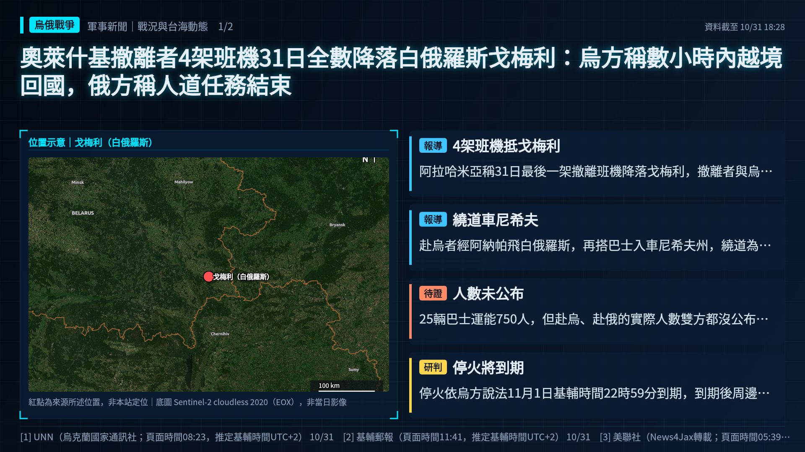
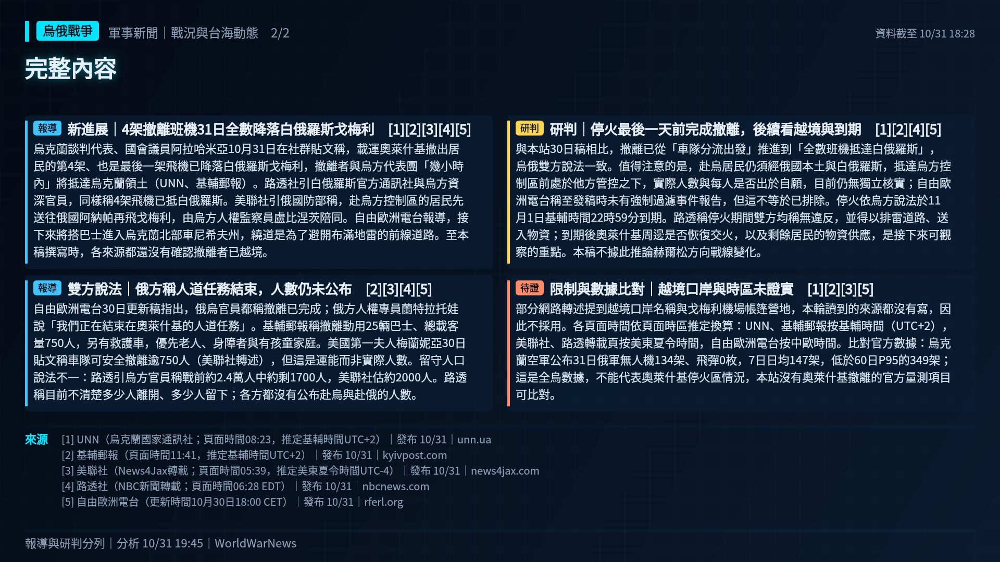
烏克蘭談判代表、國會議員阿拉哈米亞10月31日在社群貼文稱，載運奧萊什基撤出居民的第4架、也是最後一架飛機已降落白俄羅斯戈梅利，撤離者與烏方代表團「幾小時內」將抵達烏克蘭領土（UNN、基輔郵報）。路透社引白俄羅斯官方通訊社與烏方資深官員，同樣稱4架飛機已抵白俄羅斯。美聯社引俄國防部稱，赴烏方控制區的居民先送往俄國阿納帕再飛戈梅利，由烏方人權監察員盧比涅茨陪同。自由歐洲電台報導，接下來將搭巴士進入烏克蘭北部車尼希夫州，繞道是為了避開布滿地雷的前線道路。至本稿撰寫時，各來源都還沒有確認撤離者已越境。
自由歐洲電台30日更新稿指出，俄烏官員都稱撤離已完成；俄方人權專員蘭特拉托娃說「我們正在結束在奧萊什基的人道任務」。基輔郵報稱撤離動用25輛巴士、總載客量750人，另有救護車，優先老人、身障者與有孩童家庭。美國第一夫人梅蘭妮亞30日貼文稱車隊可安全撤離逾750人（美聯社轉述），但這是運能而非實際人數。留守人口說法不一：路透引烏方官員稱戰前約2.4萬人中約剩1700人，美聯社估約2000人。路透稱目前不清楚多少人離開、多少人留下；各方都沒有公布赴烏與赴俄的人數。
與本站30日稿相比，撤離已從「車隊分流出發」推進到「全數班機抵達白俄羅斯」，烏俄雙方說法一致。值得注意的是，赴烏居民仍須經俄國本土與白俄羅斯，抵達烏方控制區前處於他方管控之下，實際人數與每人是否出於自願，目前仍無獨立核實；自由歐洲電台稱至發稿時未有強制過濾事件報告，但這不等於已排除。停火依烏方說法於11月1日基輔時間22時59分到期。路透稱停火期間雙方均稱無違反，並得以排雷道路、送入物資；到期後奧萊什基周邊是否恢復交火，以及剩餘居民的物資供應，是接下來可觀察的重點。本稿不據此推論赫爾松方向戰線變化。
部分網路轉述提到越境口岸名稱與戈梅利機場帳篷營地，本輪讀到的來源都沒有寫，因此不採用。各頁面時間依頁面時區推定換算：UNN、基輔郵報按基輔時間（UTC+2），美聯社、路透轉載頁按美東夏令時間，自由歐洲電台按中歐時間。比對官方數據：烏克蘭空軍公布31日俄軍無人機134架、飛彈0枚，7日日均147架，低於60日P95的349架；這是全烏數據，不能代表奧萊什基停火區情況，本站沒有奧萊什基撤離的官方量測項目可比對。
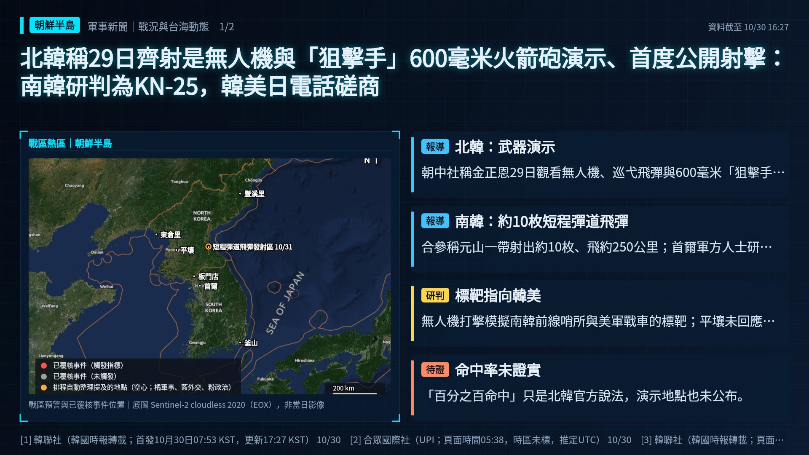
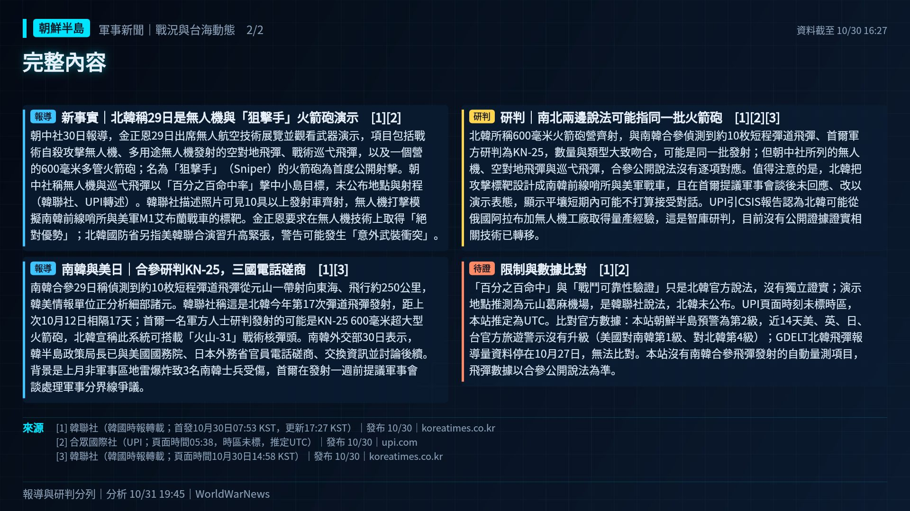
朝中社30日報導，金正恩29日出席無人航空技術展覽並觀看武器演示，項目包括戰術自殺攻擊無人機、多用途無人機發射的空對地飛彈、戰術巡弋飛彈，以及一個營的600毫米多管火箭砲；名為「狙擊手」（Sniper）的火箭砲為首度公開射擊。朝中社稱無人機與巡弋飛彈以「百分之百命中率」擊中小島目標，未公布地點與射程（韓聯社、UPI轉述）。韓聯社描述照片可見10具以上發射車齊射，無人機打擊模擬南韓前線哨所與美軍M1艾布蘭戰車的標靶。金正恩要求在無人機技術上取得「絕對優勢」；北韓國防省另指美韓聯合演習升高緊張，警告可能發生「意外武裝衝突」。
南韓合參29日稱偵測到約10枚短程彈道飛彈從元山一帶射向東海、飛行約250公里，韓美情報單位正分析細部諸元。韓聯社稱這是北韓今年第17次彈道飛彈發射，距上次10月12日相隔17天；首爾一名軍方人士研判發射的可能是KN-25 600毫米超大型火箭砲，北韓宣稱此系統可搭載「火山-31」戰術核彈頭。南韓外交部30日表示，韓半島政策局長已與美國國務院、日本外務省官員電話磋商、交換資訊並討論後續。背景是上月非軍事區地雷爆炸致3名南韓士兵受傷，首爾在發射一週前提議軍事會談處理軍事分界線爭議。
北韓所稱600毫米火箭砲營齊射，與南韓合參偵測到約10枚短程彈道飛彈、首爾軍方研判為KN-25，數量與類型大致吻合，可能是同一批發射；但朝中社所列的無人機、空對地飛彈與巡弋飛彈，合參公開說法沒有逐項對應。值得注意的是，北韓把攻擊標靶設計成南韓前線哨所與美軍戰車，且在首爾提議軍事會談後未回應、改以演示表態，顯示平壤短期內可能不打算接受對話。UPI引CSIS報告認為北韓可能從俄國阿拉布加無人機工廠取得量產經驗，這是智庫研判，目前沒有公開證據證實相關技術已轉移。
「百分之百命中」與「戰鬥可靠性驗證」只是北韓官方說法，沒有獨立證實；演示地點推測為元山葛麻機場，是韓聯社說法，北韓未公布。UPI頁面時刻未標時區，本站推定為UTC。比對官方數據：本站朝鮮半島預警為第2級，近14天美、英、日、台官方旅遊警示沒有升級（美國對南韓第1級、對北韓第4級）；GDELT北韓飛彈報導量資料停在10月27日，無法比對。本站沒有南韓合參飛彈發射的自動量測項目，飛彈數據以合參公開說法為準。
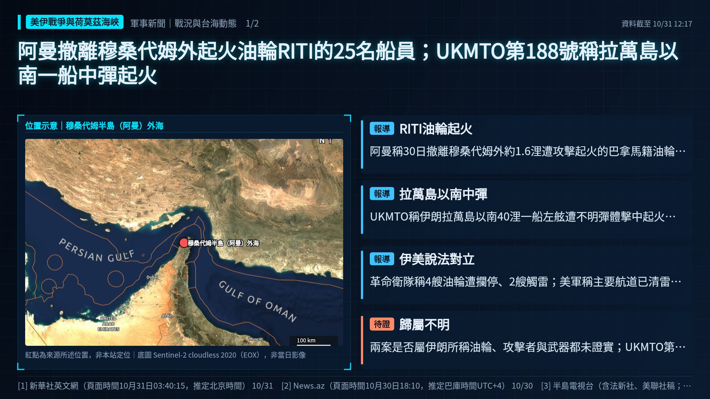
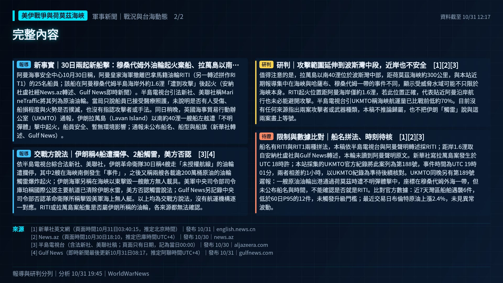
阿曼海事安全中心10月30日稱，阿曼皇家海軍撤離巴拿馬籍油輪RITI（另一轉述拼作RIT1）的25名船員；該船在阿曼穆桑代姆半島海岸外約1.6浬「遭到攻擊」後起火（安納杜盧社經News.az轉述、Gulf News即時新聞）。半島電視台引法新社、美聯社稱MarineTraffic將其列為原油油輪。當局只說船員已接受醫療照護，未說明是否有人受傷、船損程度與火勢是否撲滅，也沒有指認攻擊者或手法。同日稍晚，英國海事貿易行動辦公室（UKMTO）通報，伊朗拉萬島（Lavan Island）以南約40浬一艘船左舷遭「不明彈體」擊中起火，船員安全、暫無環境影響；通報未公布船名、船型與船旗（新華社轉述、Gulf News）。
依半島電視台綜合法新社、美聯社，伊朗革命衛隊30日稱4艘走「未授權航線」的油輪遭攔停，其中2艘在海峽南側發生「事件」，之後又稱兩艘各載逾200萬桶原油的油輪觸雷爆炸起火；伊朗海軍另稱在海峽以東擊毀一艘敵方無人載具。美軍中央司令部司令庫珀稱國際公認主要航道已清除伊朗水雷，美方否認觸雷說法；Gulf News另記錄中央司令部否認革命衛隊所稱擊毀美軍海上無人艇。以上均為交戰方說法，沒有航運機構逐一對應。RITI或拉萬島案船隻是否屬伊朗所稱的油輪，各來源都無法確認。
值得注意的是，拉萬島以南40浬位於波斯灣中部，距荷莫茲海峽約300公里，與本站近期報導集中在海峽與哈薩布、穆桑代姆一帶的事件不同，顯示受威脅水域可能不只限於海峽本身。RITI起火位置距阿曼海岸僅約1.6浬，若此位置正確，代表貼近阿曼沿岸航行也未必能避開攻擊。半島電視台引UKMTO稱海峽航運量已比戰前低約70%。目前沒有任何來源指出兩案攻擊者或武器種類，本稿不推論歸屬，也不把伊朗「觸雷」說與這兩案畫上等號。
船名有RITI與RIT1兩種拼法，本稿依半島電視台與阿曼聲明轉述採RITI；距岸1.6浬取自安納杜盧社與Gulf News轉述，本輪未讀到阿曼聲明原文。新華社寫拉萬島案發生於UTC 18時許；本站採集的UKMTO官方紀錄將此案列為第188號，事件時間為UTC 19時01分，兩者相差約1小時，以UKMTO紀錄為準待後續核對。UKMTO同晚另有第189號遲報：一艘原油油輪出港通過荷莫茲時遭不明彈體擊中，座標在穆桑代姆外海一帶，但未公布船名與時間，不能確認是否就是RITI。比對官方數據：近7天灣區船舶遇襲6件，低於60日P95的12件，未觸發升級門檻；最近交易日布倫特原油上漲2.4%，未見異常波動。
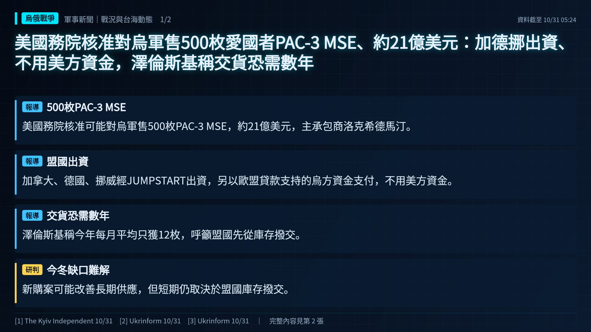
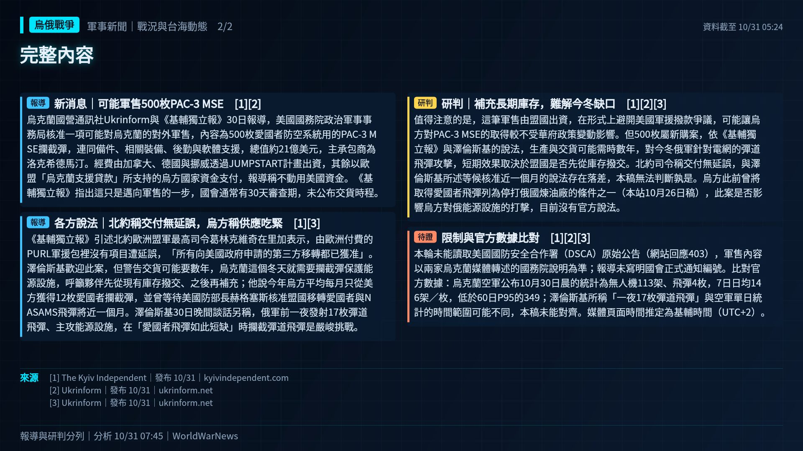
烏克蘭國營通訊社Ukrinform與《基輔獨立報》30日報導，美國國務院政治軍事事務局核准一項可能對烏克蘭的對外軍售，內容為500枚愛國者防空系統用的PAC-3 MSE攔截彈，連同備件、相關裝備、後勤與軟體支援，總值約21億美元，主承包商為洛克希德馬汀。經費由加拿大、德國與挪威透過JUMPSTART計畫出資，其餘以歐盟「烏克蘭支援貸款」所支持的烏方國家資金支付，報導稱不動用美國資金。《基輔獨立報》指出這只是邁向軍售的一步，國會通常有30天審查期，未公布交貨時程。
《基輔獨立報》引述北約歐洲盟軍最高司令葛林克維奇在里加表示，由歐洲付費的PURL軍援包裡沒有項目遭延誤，「所有向美國政府申請的第三方移轉都已獲准」。澤倫斯基歡迎此案，但警告交貨可能要數年，烏克蘭這個冬天就需要攔截彈保護能源設施，呼籲夥伴先從現有庫存撥交、之後再補充；他說今年烏方平均每月只從美方獲得12枚愛國者攔截彈，並曾等待美國防部長赫格塞斯核准盟國移轉愛國者與NASAMS飛彈將近一個月。澤倫斯基30日晚間談話另稱，俄軍前一夜發射17枚彈道飛彈、主攻能源設施，在「愛國者飛彈如此短缺」時攔截彈道飛彈是嚴峻挑戰。
值得注意的是，這筆軍售由盟國出資，在形式上避開美國軍援撥款爭議，可能讓烏方對PAC-3 MSE的取得較不受華府政策變動影響。但500枚屬新購案，依《基輔獨立報》與澤倫斯基的說法，生產與交貨可能需時數年，對今冬俄軍針對電網的彈道飛彈攻擊，短期效果取決於盟國是否先從庫存撥交。北約司令稱交付無延誤，與澤倫斯基所述等候核准近一個月的說法存在落差，本稿無法判斷孰是。烏方此前曾將取得愛國者飛彈列為停打俄國煉油廠的條件之一（本站10月26日稿），此案是否影響烏方對俄能源設施的打擊，目前沒有官方說法。
本輪未能讀取美國國防安全合作署（DSCA）原始公告（網站回應403），軍售內容以兩家烏克蘭媒體轉述的國務院說明為準；報導未寫明國會正式通知編號。比對官方數據：烏克蘭空軍公布10月30日晨的統計為無人機113架、飛彈4枚，7日日均146架／枚，低於60日P95的349；澤倫斯基所稱「一夜17枚彈道飛彈」與空軍單日統計的時間範圍可能不同，本稿未能對齊。媒體頁面時間推定為基輔時間（UTC+2）。
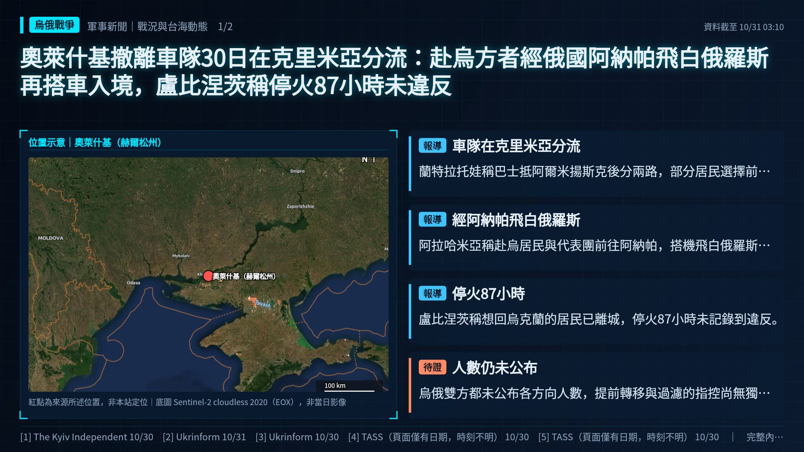
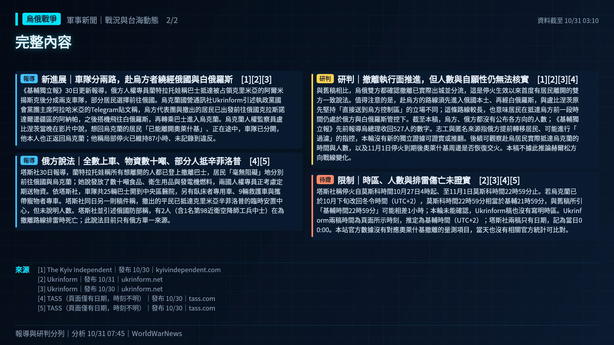
《基輔獨立報》30日更新報導，俄方人權專員蘭特拉托娃稱巴士抵達被占領克里米亞的阿爾米揚斯克後分成兩支車隊，部分居民選擇前往俄國。烏克蘭國營通訊社Ukrinform引述執政黨國會黨團主席阿拉哈米亞的Telegram貼文稱，烏方代表團與撤出的居民已出發前往俄國克拉斯諾達爾邊疆區的阿納帕，之後搭機飛往白俄羅斯，再轉乘巴士進入烏克蘭。烏克蘭人權監察員盧比涅茨當晚在影片中說，想回烏克蘭的居民「已能離開奧萊什基」、正在途中，車隊已分開，他本人也正返回烏克蘭；他稱局部停火已維持87小時、未記錄到違反。
塔斯社30日報導，蘭特拉托娃稱所有想離開的人都已登上撤離巴士，居民「毫無阻礙」地分別前往俄國與烏克蘭；她說發放了數十噸食品、衛生用品與發電機燃料，兩國人權專員正考慮定期送物資。依塔斯社，車隊共25輛巴士開到中央區醫院，另有臥床者專用車、9輛救護車與攜帶寵物者專車。塔斯社同日另一則稿件稱，撤出的平民已抵達克里米亞辛菲洛普的臨時安置中心，但未說明人數。塔斯社並引述俄國防部稱，有2人（含1名第98近衛空降師工兵中士）在為撤離路線排雷時死亡；此說法目前只有俄方單一來源。
與舊稿相比，烏俄雙方都確認撤離已實際出城並分流，這是停火生效以來首度有居民離開的雙方一致說法。值得注意的是，赴烏方的路線須先進入俄國本土、再經白俄羅斯，與盧比涅茨原先堅持「直接送到烏方控制區」的立場不同；這條路線較長，也意味居民在抵達烏方前一段時間仍處於俄方與白俄羅斯管控下。截至本稿，烏方、俄方都沒有公布各方向的人數；《基輔獨立報》先前報導烏總理收回527人的數字。志工與匿名來源指俄方提前轉移居民、可能進行「過濾」的指控，本輪沒有新的獨立證據可證實或推翻。後續可觀察赴烏居民實際抵達烏克蘭的時間與人數，以及11月1日停火到期後奧萊什基周邊是否恢復交火。本稿不據此推論赫爾松方向戰線變化。
塔斯社稱停火自莫斯科時間10月27日4時起、至11月1日莫斯科時間22時59分止。若烏克蘭已於10月下旬改回冬令時間（UTC+2），莫斯科時間22時59分相當於基輔21時59分，與舊稿所引「基輔時間22時59分」可能相差1小時；本輪未能確認，Ukrinform稿也沒有寫明時區。Ukrinform兩稿時間為頁面所示時刻，推定為基輔時間（UTC+2）；塔斯社兩稿只有日期，記為當日00:00。本站官方數據沒有對應奧萊什基撤離的量測項目，當天也沒有相關官方統計可比對。
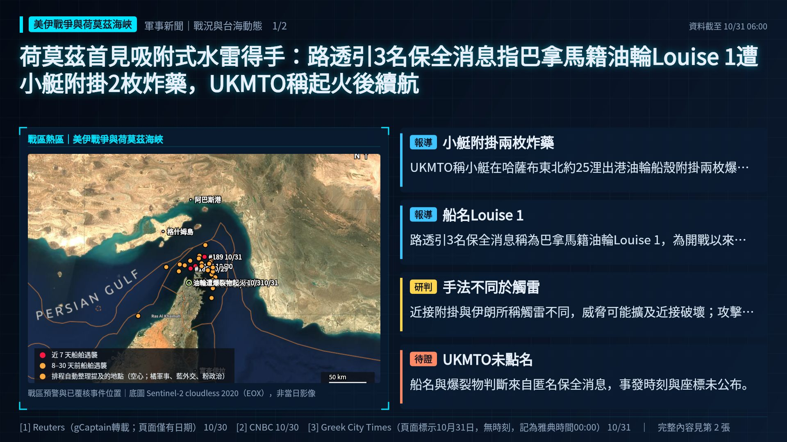
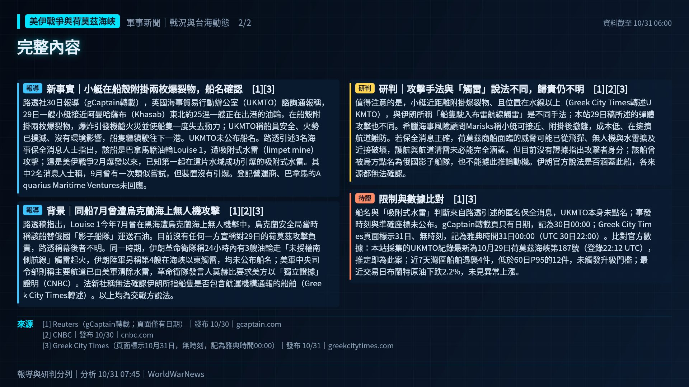
路透社30日報導（gCaptain轉載），英國海事貿易行動辦公室（UKMTO）諮詢通報稱，29日一艘小艇接近阿曼哈薩布（Khasab）東北約25浬一艘正在出港的油輪，在船殼附掛兩枚爆裂物，爆炸引發機艙火災並使船隻一度失去動力；UKMTO稱船員安全、火勢已撲滅、沒有環境影響，船隻繼續駛往下一港。UKMTO未公布船名。路透引述3名海事保全消息人士指出，該船是巴拿馬籍油輪Louise 1，遭吸附式水雷（limpet mine）攻擊；這是美伊戰爭2月爆發以來，已知第一起在這片水域成功引爆的吸附式水雷。其中2名消息人士稱，9月曾有一次類似嘗試，但裝置沒有引爆。登記營運商、巴拿馬的Aquarius Maritime Ventures未回應。
路透稿指出，Louise 1今年7月曾在黑海遭烏克蘭海上無人機擊中，烏克蘭安全局當時稱該船替俄國「影子船隊」運送石油。目前沒有任何一方宣稱對29日的荷莫茲攻擊負責，路透稱幕後者不明。同一時期，伊朗革命衛隊稱24小時內有3艘油輪走「未授權南側航線」觸雷起火，伊朗陸軍另稱第4艘在海峽以東觸雷，均未公布船名；美軍中央司令部則稱主要航道已由美軍清除水雷，革命衛隊發言人莫赫比要求美方以「獨立證據」證明（CNBC）。法新社稱無法確認伊朗所指船隻是否包含航運機構通報的船舶（Greek City Times轉述）。以上均為交戰方說法。
值得注意的是，小艇近距離附掛爆裂物、且位置在水線以上（Greek City Times轉述UKMTO），與伊朗所稱「船隻駛入布雷航線觸雷」是不同手法；本站29日稿所述的彈體攻擊也不同。希臘海事風險顧問Marisks稱小艇可接近、附掛後撤離，成本低、在擁擠航道難防。若保全消息正確，荷莫茲商船面臨的威脅可能已從飛彈、無人機與水雷擴及近接破壞，護航與航道清雷未必能完全涵蓋。但目前沒有證據指出攻擊者身分；該船曾被烏方點名為俄國影子船隊，也不能據此推論動機。伊朗官方說法是否涵蓋此船，各來源都無法確認。
船名與「吸附式水雷」判斷來自路透引述的匿名保全消息，UKMTO本身未點名；事發時刻與準確座標未公布。gCaptain轉載頁只有日期，記為30日00:00；Greek City Times頁面標示31日、無時刻，記為雅典時間31日00:00（UTC 30日22:00）。比對官方數據：本站採集的UKMTO紀錄最新為10月29日荷莫茲海峽第187號（登錄22:12 UTC），推定即為此案；近7天灣區船舶遇襲4件，低於60日P95的12件，未觸發升級門檻；最近交易日布蘭特原油下跌2.2%，未見異常上漲。
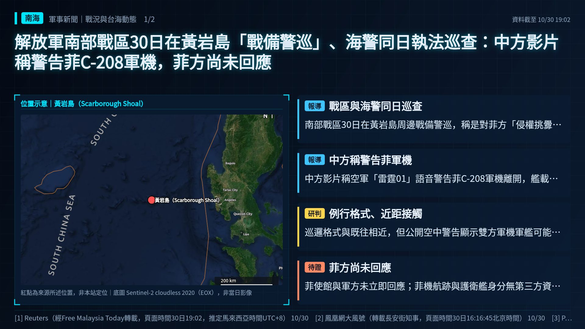
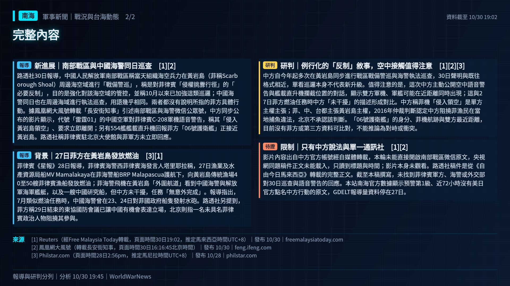
路透社30日報導，中國人民解放軍南部戰區稱當天組織海空兵力在黃岩島（菲稱Scarborough Shoal）周邊海空域進行「戰備警巡」，稱是對菲律賓「侵權挑釁行徑」的「必要反制」，目的是強化對該海空域的管控，並稱10月以來已加強這類巡邏；中國海警同日也在周邊海域進行執法巡查，用語幾乎相同。兩者都沒有說明所指的菲方具體行動。據鳳凰網大風號轉載「長安街知事」引述南部戰區與海警微信公眾號，中方同步公布的影片顯示，代號「雷霆01」的中國空軍對菲律賓C-208軍機語音警告，稱其「侵入黃岩島領空」、要求立即離開；另有554艦艦載直升機回報菲方「06號護衛艦」正接近黃岩島。路透社稱菲律賓駐北京大使館與菲軍方未立即回應。
菲律賓《星報》28日報導，菲律賓海警西菲律賓海發言人塔里耶拉稱，27日漁業及水產資源局船MV Mamalakaya在菲海警船BRP Malapascua護航下，向黃岩島傳統漁場40至50艘菲律賓漁船發放燃油；菲海警飛機在黃岩島「外圍航道」看到中國海警與解放軍海軍艦艇，以及一艘中國研究船，但中方未干擾，任務「無意外完成」。報導指出，7月類似燃油任務時，中國海警曾在23、24日對菲國政府船隻發射水砲。路透社另提到，菲方稱29日結束的東協國防會議已讓中國有機會表達立場，北京則指一名未具名菲律賓政治人物阻撓其參與。
中方自今年起多次在黃岩島同步進行戰區戰備警巡與海警執法巡查，30日聲明與既往格式相近，單看巡邏本身不代表新升級。值得注意的是，這次中方主動公開空中語音警告與艦載直升機攔截位置的對話，顯示雙方軍機、軍艦可能在近距離同時出現；這與27日菲方燃油任務時中方「未干擾」的描述形成對比。中方稱菲機「侵入領空」是單方主權主張；菲、中、台都主張黃岩島主權，2016年仲裁判斷認定中方阻撓菲漁民在當地捕魚違法，北京不承認該判斷。「06號護衛艦」的身分、菲機航跡與雙方最近距離，目前沒有菲方或第三方資料可比對，不能推論為對峙或衝突。
影片內容出自中方官方帳號經自媒體轉載，本輪未能直接開啟南部戰區微信原文，央視網同題稿件正文未能載入，只讀到標題與時間；影片本身未觀看。路透社稿件是從《自由今日馬來西亞》轉載的完整正文。截至本稿撰寫，未找到菲律賓軍方、海警或外交部對30日巡查與語音警告的回應。本站南海官方數據顯示預警第1級、近72小時沒有美日官方點名中方行動的原文，GDELT報導量資料停在27日。
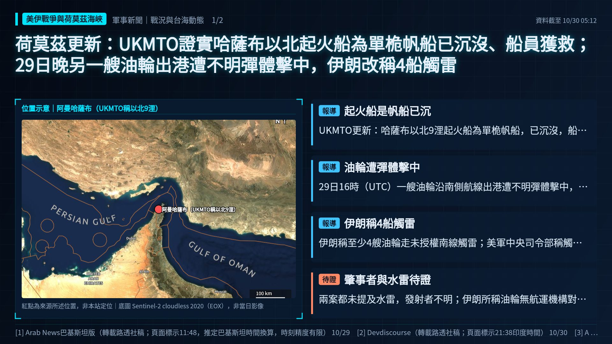
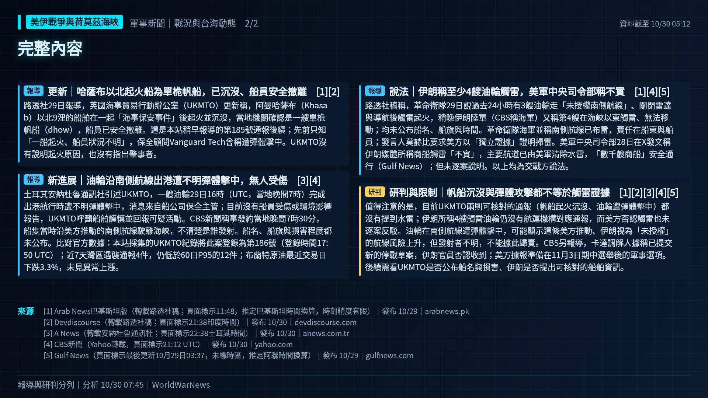
路透社29日報導，英國海事貿易行動辦公室（UKMTO）更新稱，阿曼哈薩布（Khasab）以北9浬的船舶在一起「海事保安事件」後起火並沉沒，當地機關確認是一艘單桅帆船（dhow），船員已安全撤離。這是本站稍早報導的第185號通報後續；先前只知「一船起火、船員狀況不明」，保全顧問Vanguard Tech曾稱遭彈體擊中。UKMTO沒有說明起火原因，也沒有指出肇事者。
土耳其安納杜魯通訊社引述UKMTO，一艘油輪29日16時（UTC，當地晚間7時）完成出港航行時遭不明彈體擊中，消息來自船公司保全主管；目前沒有船員受傷或環境影響報告，UKMTO呼籲船舶謹慎並回報可疑活動。CBS新聞稱事發約當地晚間7時30分，船隻當時沿美方推動的南側航線駛離海峽，不清楚是誰發射。船名、船旗與損害程度都未公布。比對官方數據：本站採集的UKMTO紀錄將此案登錄為第186號（登錄時間17:50 UTC）；近7天灣區遇襲通報4件，仍低於60日P95的12件；布蘭特原油最近交易日下跌3.3%，未見異常上漲。
路透社稿稱，革命衛隊29日說過去24小時有3艘油輪走「未授權南側航線」、關閉雷達與導航後觸雷起火，稍晚伊朗陸軍（CBS稱海軍）又稱第4艘在海峽以東觸雷、無法移動；均未公布船名、船旗與時間。革命衛隊海軍並稱南側航線已布雷，責任在船東與船員；發言人莫赫比要求美方以「獨立證據」證明掃雷。美軍中央司令部28日在X發文稱伊朗媒體所稱商船觸雷「不實」，主要航道已由美軍清除水雷，「數千艘商船」安全通行（Gulf News）；但未逐案說明。以上均為交戰方說法。
值得注意的是，目前UKMTO兩則可核對的通報（帆船起火沉沒、油輪遭彈體擊中）都沒有提到水雷；伊朗所稱4艘觸雷油輪仍沒有航運機構對應通報，而美方否認觸雷也未逐案反駁。油輪在南側航線遭彈體擊中，可能顯示這條美方推動、伊朗視為「未授權」的航線風險上升，但發射者不明，不能據此歸責。CBS另報導，卡達調解人據稱已提交新的停戰草案，伊朗官員否認收到；美方據報準備在11月3日期中選舉後的軍事選項。後續需看UKMTO是否公布船名與損害、伊朗是否提出可核對的船舶資訊。
| 布蘭特原油 | 117.64 | +2.4% | |
| WTI 原油 | 104.12 | +2.1% | |
| 歐洲天然氣 TTF | 103.94 | +5.4% | |
| 台股加權指數 | 45,212 | -2.5% | |
| 台積電 | 2,370 | -1.9% | |
| 美元兌新台幣 | 32.567 | +0.6% | |
| 黃金 | 3,899 | -3.3% | |
| VIX 恐慌指數 | 19.4 | +12.9% |
橘色＝往風險方向變動（油價、天然氣、黃金、美元兌新台幣上漲，台股下跌）；⚠️＝超過 3 個標準差或固定門檻。資料：Yahoo Finance，可能延遲。不構成投資建議。
資料：USNI News 艦隊追蹤（2026-10-05）｜週報已超過 10 天未更新，僅供參考；概略位置。
Trump Promised Poland More Troops. They’re Still Not There.｜Sam Skove
美國國防部5月突然取消對波蘭的輪調部署，川普數日後又宣布加派5,000名部隊，但近四個月過去仍未到位，五角大廈也未說明時程。文章訪問波蘭官員、前外交官與美國企業研究院學者，指出可能原因包括陸軍裝甲部隊數量有限、伊朗戰爭帶來的作戰開支，以及預定12月提交川普的駐歐兵力檢討；該檢討可能整體裁減駐歐兵力，但也可能把更多兵力移往波蘭，同時雙方正談判可容納最多一萬名美軍的永久設施。波蘭前外交官認為美國信譽因此受損，作者結論是在俄國對歐破壞活動升高下，華沙除了期待之外選擇不多。
對台灣的意義：美軍兵力因伊朗戰爭吃緊、總統承諾難以落實，顯示即使是「模範盟友」也未必能確保美方承諾兌現；台灣評估美國在多戰區同時用兵時的實際支援能量，可參考此例。
本站中文導讀，非全文翻譯｜已讀全文
Russia’s Next Mobilization Is Already Happening｜Alexey Kovalev
前Meduza調查編輯Kovalev指出，2022年動員令造成民意重挫與大批男性出逃，外界因此關注國會選後是否再發動員令，但這可能問錯了問題。依俄國最高法院2023年見解，2022年的動員從未正式結束，法律上俄國持續處於動員狀態。作者引用追蹤地方預算的研究指出，2026年前九個月簽約約26.3萬人，少於去年同期，簽約獎金升至近200萬盧布；在烏軍每月造成數萬傷亡下，當局愈來愈依賴街頭強拉、逼迫義務役簽約等手段，對象集中在貧窮偏遠地區。作者認為除非前線急遽惡化，克里姆林宮會繼續以這種低調方式補充兵源，而非公開下令。
對台灣的意義：俄國以金錢誘因與隱性強制維持兵源，意味烏俄戰爭可能長期延續，牽動美歐軍援資源分配與歐洲安全焦點，也間接影響美國投注印太的戰略注意力。
本站中文導讀，非全文翻譯｜已讀全文
The Gulf Isn’t Ready for a Renewed Iran War｜Amir Handjani
作者指出，雖然荷莫茲海峽與替代航線的原油運量已回到戰前水準以上，但不能據此認定波灣能再承受一輪戰事。依路透調查，伊朗至少對七國84處設施發動135次攻擊，沙烏地九大煉油廠有五座受損，卡達拉斯拉凡兩條液化天然氣產線停擺，約占出口產能17%，修復需三到五年。攔截率高並不代表設施安全，一枚飛彈命中關鍵元件就足以讓廠區停工，且多國愛國者攔截彈已大量消耗；胡塞也反覆攻擊沙國東西向輸油管與吉贊煉油廠。亞洲首當其衝，孟加拉、巴基斯坦、菲律賓都曾限電限油。作者主張以談判換取解除封鎖與限制濃縮，而非在期中選舉後再發動短期打擊。
對台灣的意義：台灣液化天然氣有相當比例來自卡達等波灣產地，文中所述產能需數年修復、亞洲進口國首當其衝，提醒台灣檢視天然氣安全存量與多元採購來源的韌性。
本站中文導讀，非全文翻譯｜已讀全文
| 日期 | 共機架次 |
|---|---|
| 10/31 | 13 |
| 10/30 | 6 |
| 10/29 | 6 |
| 10/28 | 6 |
| 10/27 | 3 |
| 10/26 | 3 |
| 10/21 | 29 |
| 10/20 | 14 |
| 10/19 | 5 |
| 10/18 | 2 |
| 10/17 | 9 |
| 10/16 | 8 |
| 10/15 | 15 |
| 10/14 | 9 |
| 10/13 | 5 |
| 10/12 | 4 |
| 10/11 | 12 |
| 10/10 | 21 |
| 10/9 | 2 |
| 10/8 | 3 |
| 10/7 | 14 |
| 10/3 | 5 |
| 10/2 | 6 |
| 10/1 | 23 |
| 9/30 | 9 |
| 9/29 | 3 |
| 9/28 | 3 |
| 9/27 | 2 |
| 9/26 | 5 |
| 9/25 | 2 |
虛線為過去 60 天的第 95 百分位，超過即觸發預警指標；單日偏高常見於聯合戰備警巡，不代表戰爭即將發生。
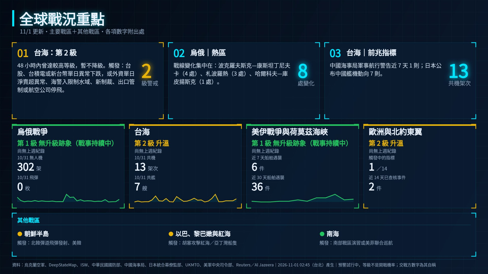
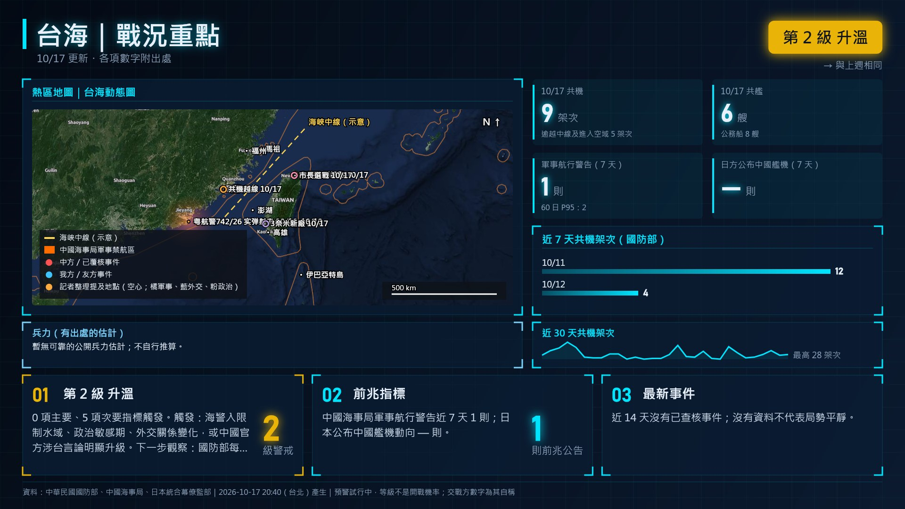
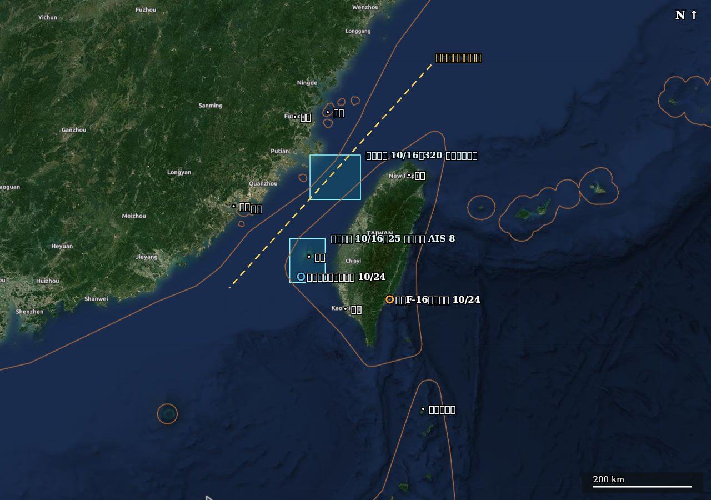
國防部 10/31 通報（前 24 小時）：共機 13 架次（逾越中線及進入空域 6 架次）、共艦 7 艘、公務船 2 艘。國防部未公布共機精確位置，圖上不標航跡。中國海事局軍事航行警告 1 則生效或即將生效：粤航警787/26 实弹射击。日本統合幕僚監部近 7 天公布中國艦艇／軍機動向 7 則。雷達衛星（Global Fishing Watch）最近過境：金門周邊 42 艘（未開 AIS 1）、馬祖周邊 71 艘（未開 AIS 10）、澎湖周邊 1 艘（未開 AIS 0）、海峽中段 67 艘（未開 AIS 12）。預警第 2 級 升溫，觸發：台股、台積電或新台幣單日異常下跌，或外資單日淨賣超異常、海警入限制水域、新制裁、出口管制或航空公司停飛。
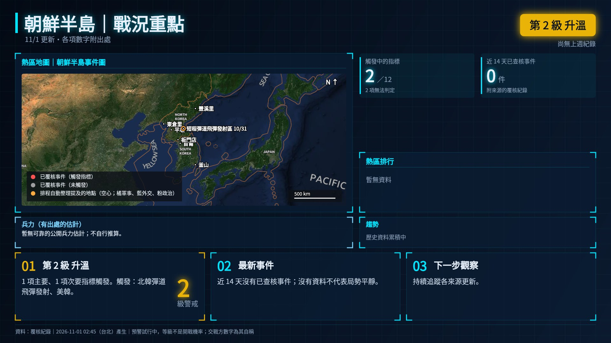
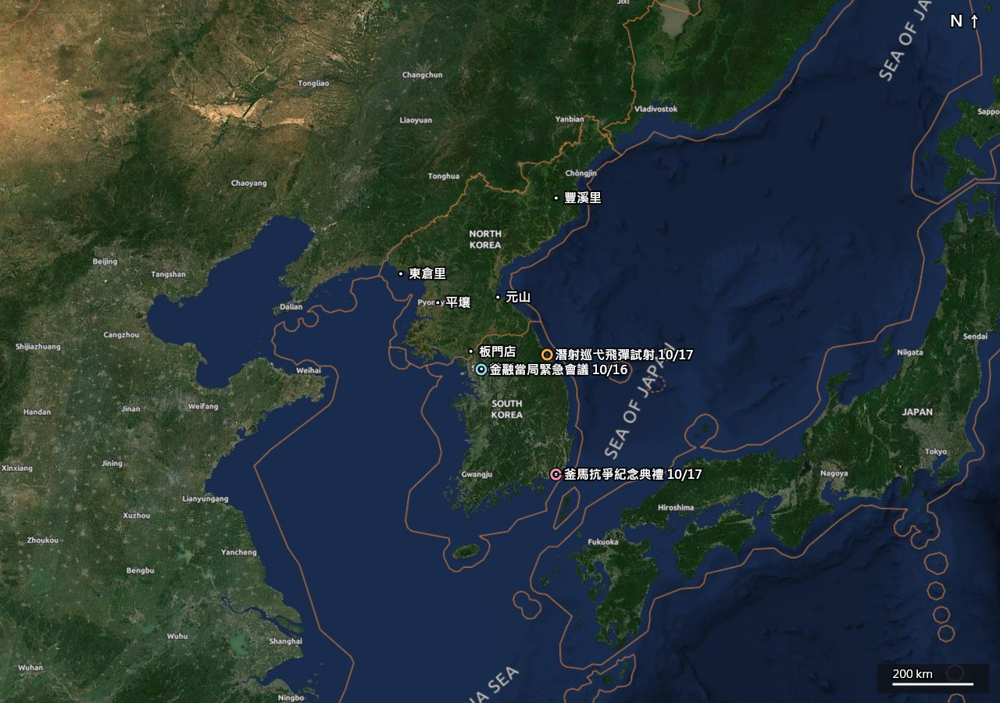
預警第 2 級 升溫，觸發：北韓彈道飛彈發射、美韓。研究稿（10/30）：朝中社30日報導，金正恩29日出席無人航空技術展覽並觀看武器演示，項目包括戰術自殺攻擊無人機、多用途無人機發射的空對地飛彈、戰術巡弋飛彈，以及一個營的600毫米多管火箭砲；名為「狙擊手」（Sniper）的火箭砲為首度公開…近 14 天沒有附座標的已覆核事件；圖上空心點是排程自動整理提及的地點，不是查核過的事件位置。
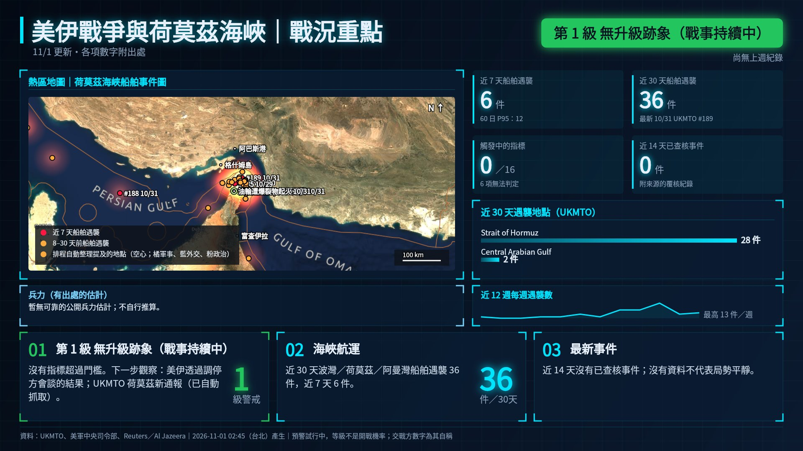
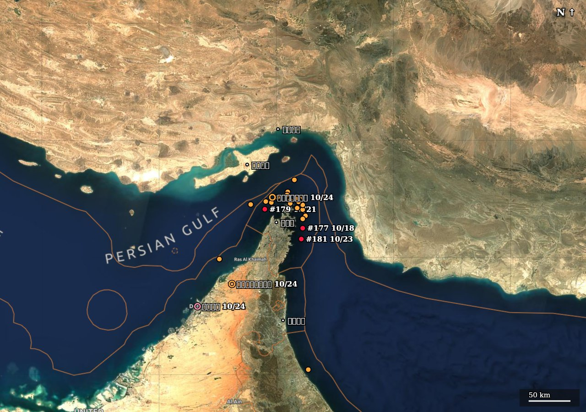
UKMTO 通報（台北時間）：近 30 天波灣／荷莫茲／阿曼灣船舶遇襲 36 件，近 7 天 6 件；最新為 10/31 Strait of Hormuz（UKMTO #189）。預警第 1 級 無升級跡象（戰事持續中）。
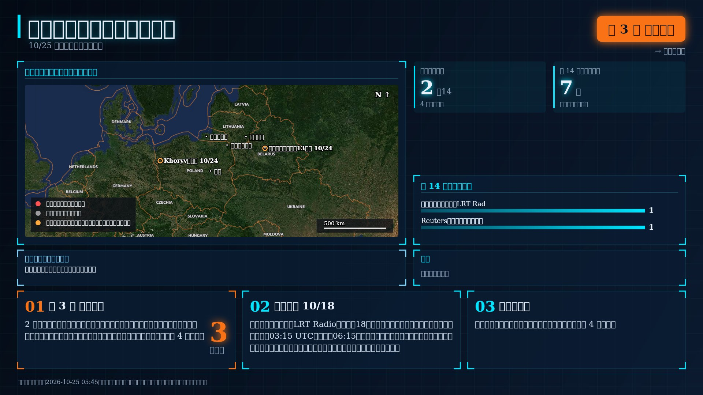
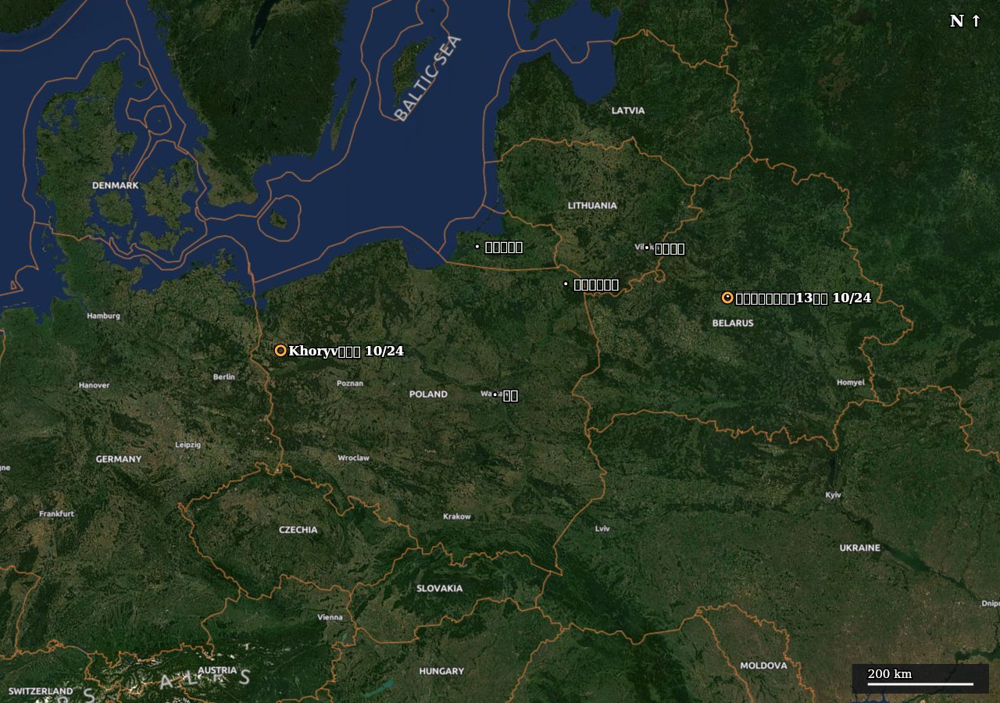
預警第 2 級 升溫，觸發：軍方應變升級。近期事件：10/18 立陶宛國防部長接受LRT Radio訪問稱，18日上午不明飛行物進入立陶宛空域，…；10/18 Reuters直接引述北約官員確認，18日兩架義大利Eurofighter在北約…。近 14 天沒有附座標的已覆核事件；圖上空心點是排程自動整理提及的地點，不是查核過的事件位置。
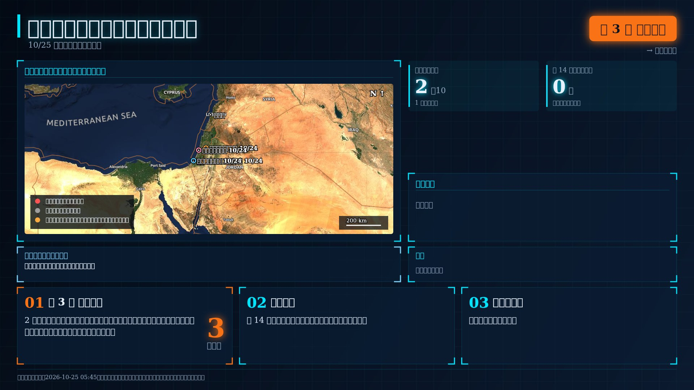
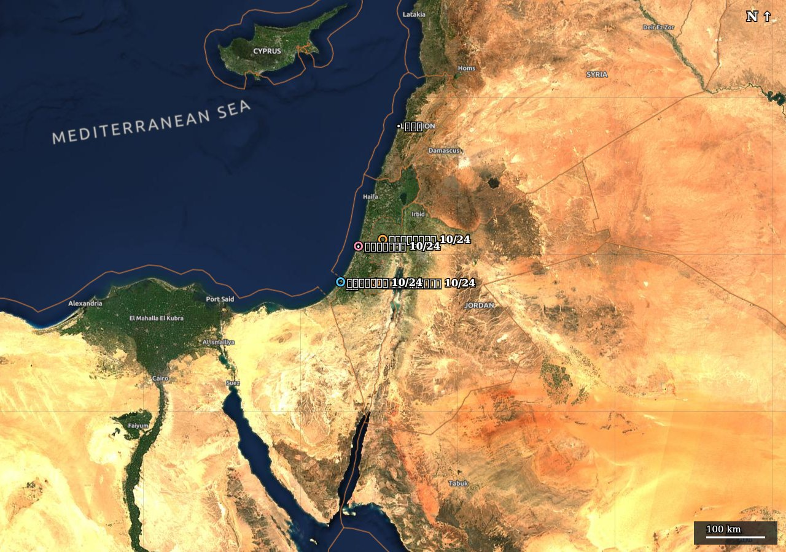
預警第 2 級 升溫，觸發：胡塞攻擊紅海／亞丁灣船隻。近 14 天沒有附座標的已覆核事件；圖上空心點是排程自動整理提及的地點，不是查核過的事件位置。
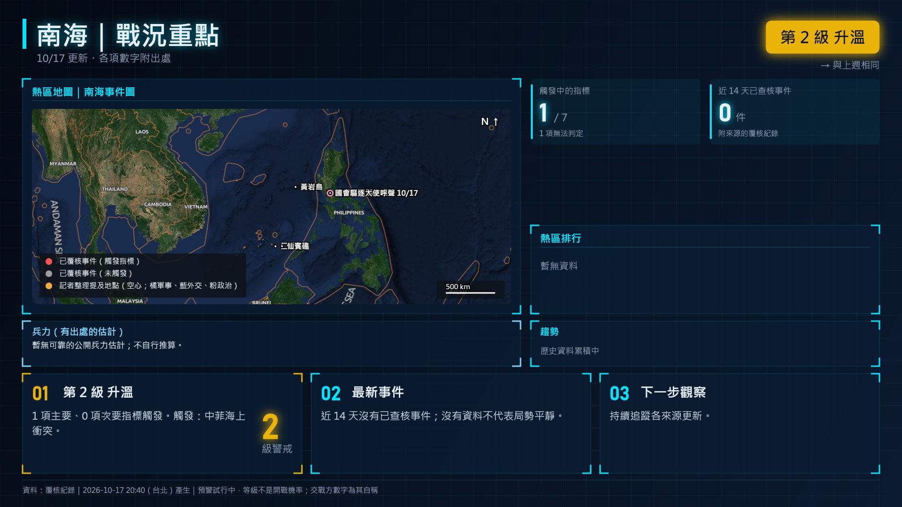
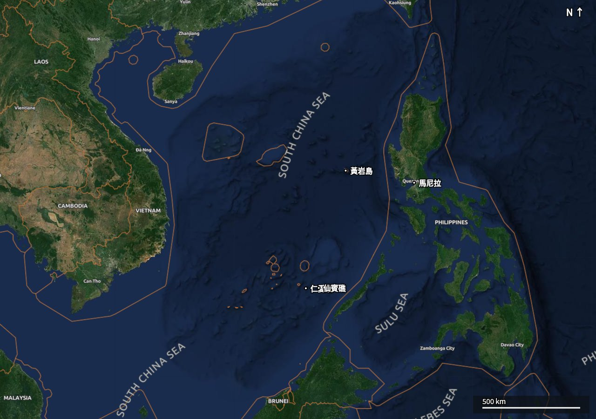
預警第 1 級 常態，觸發：南部戰區演習或美菲聯合巡航。研究稿（10/30）：路透社30日報導，中國人民解放軍南部戰區稱當天組織海空兵力在黃岩島（菲稱Scarborough Shoal）周邊海空域進行「戰備警巡」，稱是對菲律賓「侵權挑釁行徑」的「必要反制」，目的是強化對該海空域的管控，並稱10月以…近 14 天沒有附座標的已覆核事件，圖上只標地名；沒有資料不代表局勢平靜。
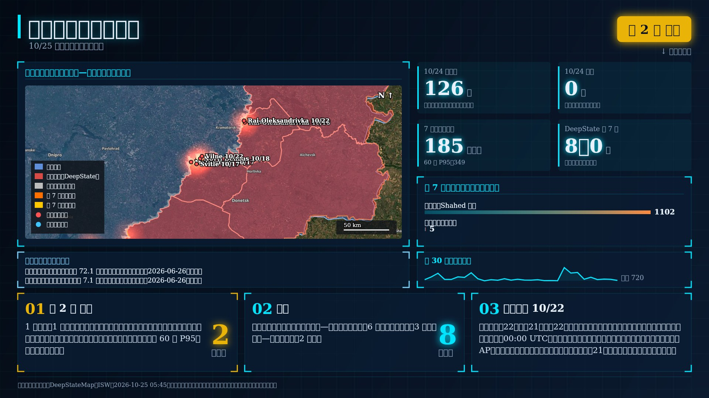
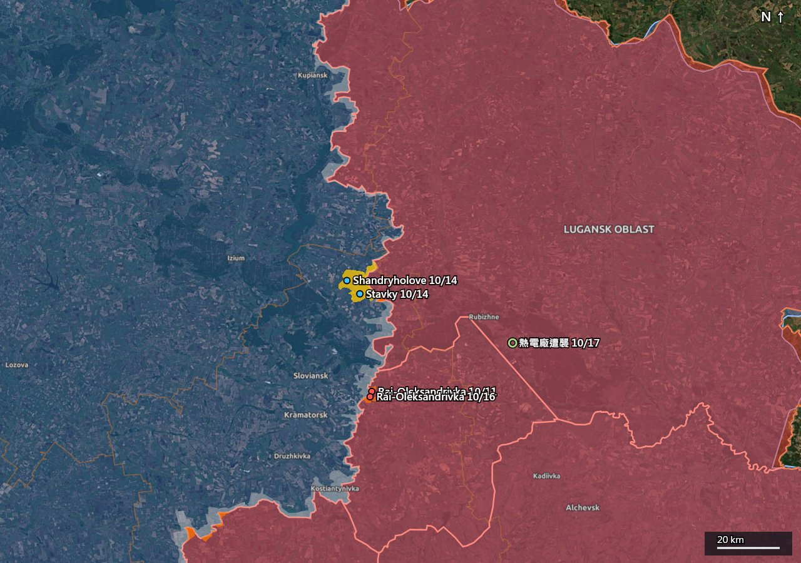
10/24→10/31 DeepState 全線更新：俄軍推進 8 處（Kostiantynivka、Vozdvizhivska、Svitle、Vozvdizhivka等），烏軍收復 0 處。本圖範圍控制區比較：俄方新增約 16 km²、烏方收復約 0 km²（像素估算）。烏克蘭空軍通報 10/31 無人機 302、飛彈 0（烏方數字）。預警第 1 級 無升級跡象（戰事持續中），觸發：外交關係變化或安理會緊急會議、安理會、北約峰會等國際組織行動。
10/31 烏克蘭空軍通報：無人機 302 架、飛彈 0 枚；7 日日均 171（交戰方公布數字）。
戰場圖控制區資料：DeepStateMap.live（烏克蘭團隊依公開資料整理，非獨立證實；依其授權附出處使用）。另可對照 ISW 每日評估。
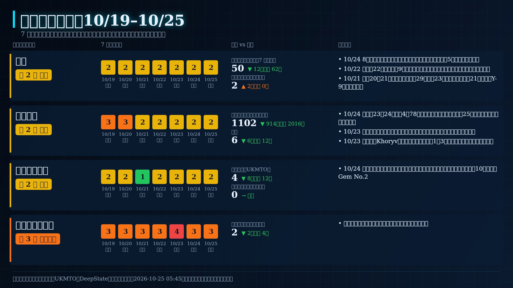
交戰方數字為其自稱。「政府投降」「國家戰敗」一類訊息一律是假訊息。本站為個人整理，非官方資訊。